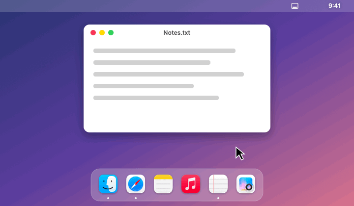
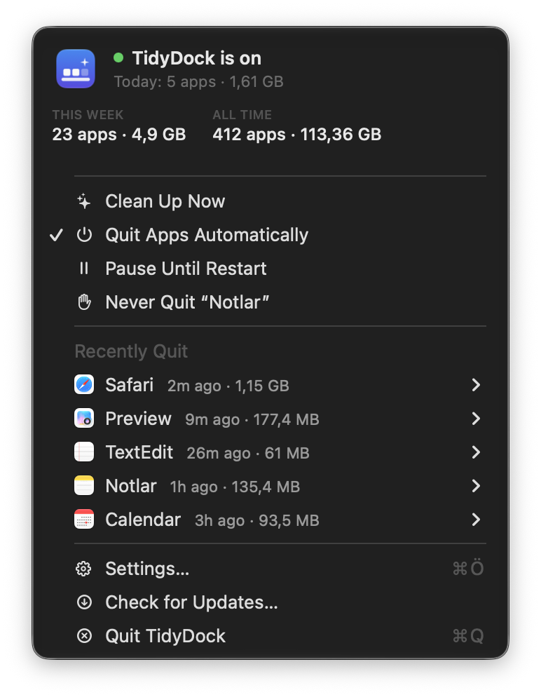
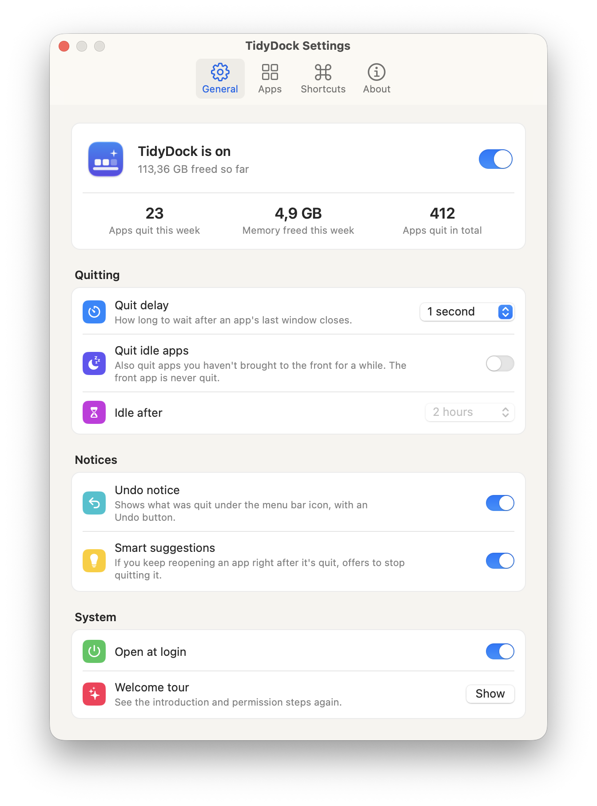

On a Mac, closing an app's last window usually leaves it running in the Dock. TidyDock quits it for you, so your Dock only shows what you're actually using.

Built to quit the right apps and never the wrong ones.
Gently, like ⌘Q. Apps with unsaved work still ask you first.
A small notice shows what was quit and how much memory it freed, with an Undo button.
Menu bar apps, minimized windows, other desktops and full-screen apps are all respected.
One click (or a shortcut) quits every app that's running without a window.
Reopen an app right after it's quit and TidyDock offers to stop quitting it.
Optionally quit apps you haven't used for hours. The app in front is never touched.
A native menu bar app with settings that look like System Settings, in light and dark.


TidyDock needs Accessibility access only to count each app's windows.
It sees how many windows an app has, never what's in them.
No analytics. The only network request checks for updates.
Every line is on GitHub under the MIT license.
TidyDock isn't notarized by Apple yet. Open System Settings › Privacy & Security and click Open Anyway, or run xattr -dr com.apple.quarantine /Applications/TidyDock.app.
No. An app is only quit after its last window closes (or, if you turn it on, after hours in the background). Unsaved documents still get a save prompt, and you can undo any quit.
Yes. Music, Spotify, Mail and Messages are excluded by default, and you can exclude any app from the menu with one click.
No. It reacts to window events and uses almost no CPU or memory, and it frees memory by quitting idle apps.